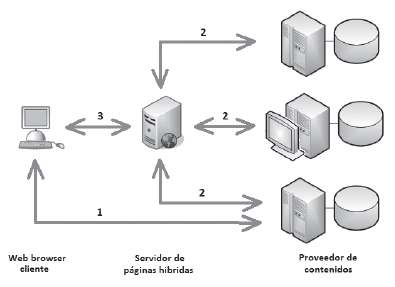

La arquitectura de una aplicación web híbrida está compuesta por 3 partes principales:
- Proveedor de contenidos: Es la fuente de datos. Los datos suelen estar disponibles a través de una interfaz pública o utilizando un API y con diferentes protocolos como RSS, Atom, Screen scraping o servicios web.
- Servidor de la aplicación web: Es la aplicación web nueva que provee de un nuevo servicio utilizando diferentes fuentes de información de las que no es dueño. El sitio hará uso de las tecnologías de las que disponga el proveedor de contenidos para conseguir generar la aplicación híbrida.
- Cliente web: Es la interfaz del usuario. Es una aplicación web que puede hacer uso de lenguajes como JavaScript o AJAX.
A continuación se muestra un ejemplo de una aplicación híbrida:

- El usuario accede directamente al contenido que ofrece el proveedor. En este caso el contenido se mezcla en el cliente a través de JavaScript.
- En este caso el acceso al proveedor de los contenidos se realiza desde el sitio web. Los contenidos en este caso se mezclan en el servidor de aplicaciones. Una vez mezclados son enviados al navegador web cliente.
- En el tercer caso el usuario accede desde el navegador al servidor de páginas híbridas. En los casos 2 y 3 es posible acceder a través de las API.